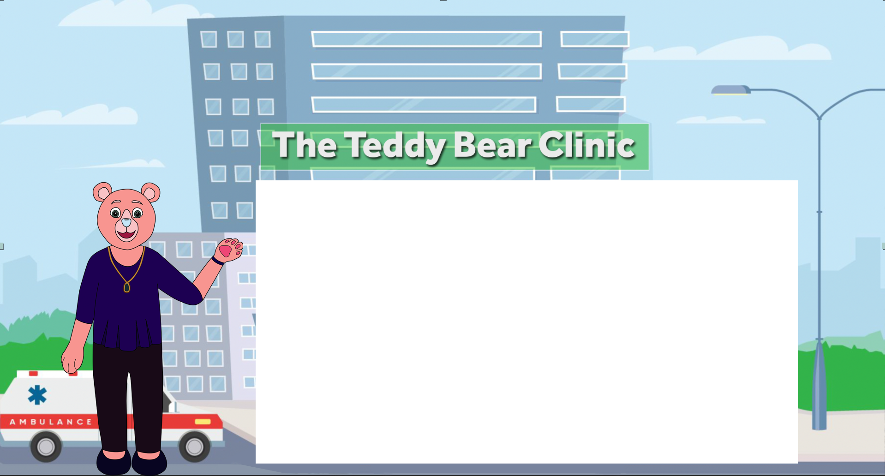

Your child may have recently taken part in a “Teddy Bear Clinic” – an injury prevention education program sponsored by the Trauma Center at Stony Brook Children’s Hospital. After learning about car and helmet safety, the kids pretend to be doctors
and nurses and help care for their stuffed animals.
This game was created to help parents continue to talk with their child about ways to stay safe and injury free. In the game, kids and parents will look for safe and unsafe activities
in the pictures. Once you click on something safe/unsafe, a more detailed explanation will pop up to talk about safety. At Stony Brook Children’s, we are committed to keeping Suffolk County's children healthy and safe.